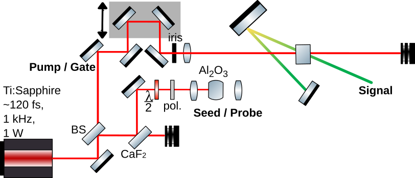

I am a (Medical) Physics undergraduate student at the University of Windsor. I work in the group of T. J. Hammond, wherein I do frequency-resolved optical gating via Kerr instability amplification; and in the group of Steven J. Rehse, wherein I perform laser-induced breakdown spectroscopy on bacterial specimens to advance the diagnosis of bacterial meningitis.
I wrote a simple mini package for making scientific plots look better called pub_style; you can see
some of that here.
Talks & Publications

Establishing the limit of detection of laser-induced breakdown spectroscopy for Escherichia coli in artifical cerebrospinal fluid for the diagnosis of bacterial meningitis
CAP Annual Congress, 2026

Femtojoule Pulse Reconstruction via Kerr Instability Amplification
CAP Annual Congress, 2026 – presented by T. J. Hammond